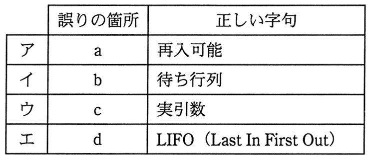

プログラムの実行に関する次の記述の下線部a〜dのうち，いずれかに誤りがある。誤りの箇所と正しい字句の適切な組合せはどれか。
自分自身を呼び出すことができるプログラムは，
a
再帰的
であるという。このようなプログラムを実行するときは，
b
スタック
に局所変数，
c
仮引数
及び戻り番地を格納して呼び出し，復帰するときは
d
FIFO（First In First Out）
方式で格納したデータを取り出して復元する必要がある。
